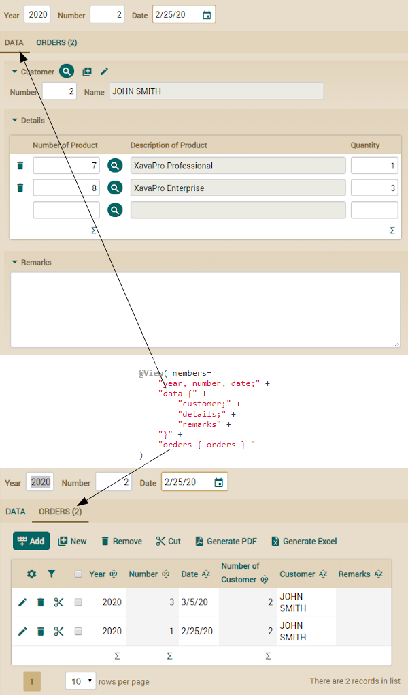
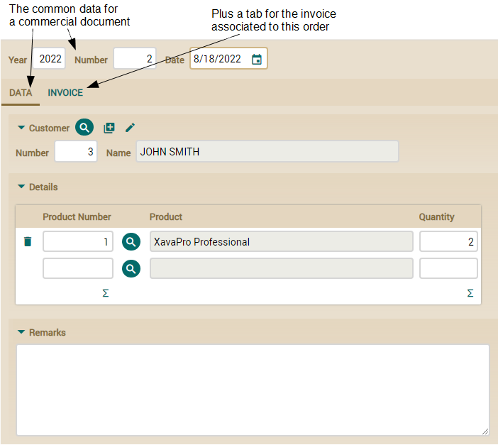
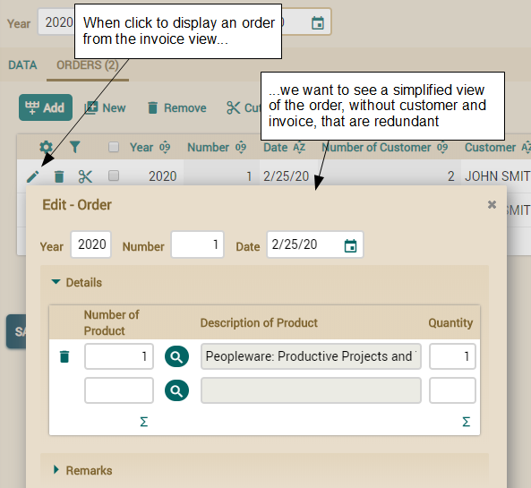
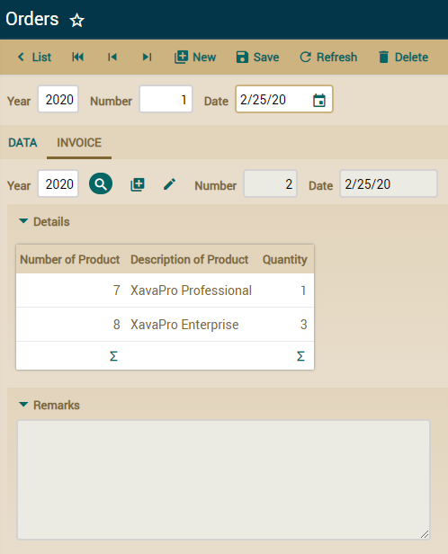

@View(members = "a, b, c;") // Esta vista se usa para visualizar Parent, pero no para Child
public class Parent { ... }
public class Child extends Parent { ... } // Child se visualiza usando la vista generada
// automáticamente, no la vista de Parent
@View(members = "a, b, c;") // Esta vista sin nombre es la vista DEFAULT
public class Parent { ... }
@View(name="A" members = "d", // Añade d a la vista heredada
extendsView = "super.DEFAULT") // Extiende la vista por defecto de Parent
@View(name="B" members = "a, b, c; d") // La vista B es igual a la vista A
public class Child extends Parent { ... } // Child se visualiza usando la vista generada
// automáticamente, no la vista de Parent

@View( members=
"year, number, date;" +
"data {" +
"customer;" +
"details;" +
"remarks" +
"}" +
"orders { orders } "
)
public class Invoice extends CommercialDocument {
@View(members=
"year, number, date," + // Los miembros para la cabecera en una línea
"data {" + // Una pestaña 'data' para los datos principales del documento
"customer;" +
"details;" +
"remarks" +
"}"
)
abstract public class CommercialDocument extends Identifiable {
@View(extendsView="super.DEFAULT", // Extiende de la vista de CommercialDocument
members="orders { orders }" // Añadimos orders dentro de una pestaña
)
public class Invoice extends CommercialDocument {

@View(extendsView="super.DEFAULT", // Extiende de la vista de CommercialDocument
members="invoice { invoice } " // Añadimos invoice dentro de una pestaña
)
public class Order extends CommercialDocument {

@View( extendsView="super.DEFAULT", // La vista por defecto
members="invoice { invoice } "
)
@View( name="NoCustomerNoInvoice", // Una vista llamada NoCustomerNoInvoice
members= // que no incluye cliente ni factura.
"year, number, date;" + // Ideal para ser usada desde Invoice
"details;" +
"remarks"
)
public class Order extends CommercialDocument {
public class Invoice extends CommercialDocument {
...
@OneToMany(mappedBy="invoice")
@CollectionView("NoCustomerNoInvoice") // Esta vista se usa para visualizar pedidos
private Collection<Order> orders;
@View( extendsView="super.DEFAULT", // La vista por defecto
members="orders { orders }"
)
@View( name="NoCustomerNoOrders", // Una vista llamada NoCustomerNoOrders
members= // que no incluye cliente ni pedidos
"year, number, date;" + // Ideal para usarse desde Order
"details;" +
"remarks"
)
public class Invoice extends CommercialDocument {
public class Order extends CommercialDocument {
@ManyToOne
@ReferenceView("NoCustomerNoOrders") // Esta vista se usa para visualizar invoice
private Invoice invoice;
...
